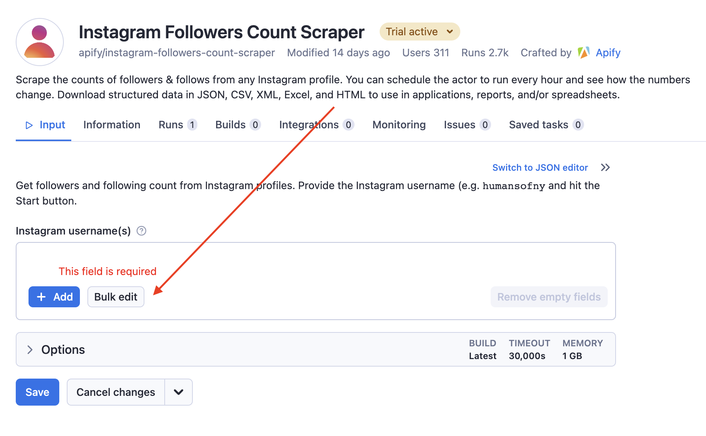
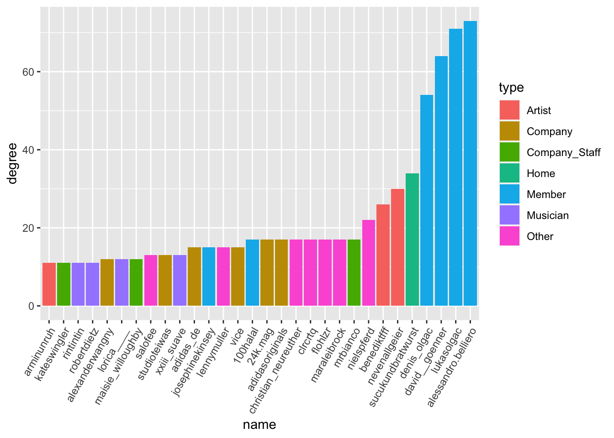

#install.packages("rjson")
library(rjson)
library(tidyverse)
sb_list <- fromJSON(file="./data/sucuk_bratwurst.json")Instagram is one of the most widely used social media platforms in the world where users share photos, videos and other content. Instagram web scraping can extract data from public Instagram profiles that may be of interest for various purposes, such as:
Marketing and advertising: businesses can scan Instagram profiles of influencers promoting their products or services and analyse the number of followers and interactions to find potential partnerships.
Competitive analysis: By scraping Instagram profiles of competitors, companies can analyse their activities, content and engagement and draw conclusions on how to improve their own Instagram presence.
Research and analysis: Scientists and researchers can collect Instagram data to study trends in online communication and user behaviour.
Social media management: Social media managers can use Instagram data to optimise their strategies to increase interactions and engagement on the platform.
However, it is important to note that scraping Instagram data can also raise legal and ethical concerns. Instagram has terms of service that allow scraping data from public profiles, but scraping private profiles or selling Instagram data to third parties without users’ consent may violate privacy laws.
Webscraping Instagram
It is difficult to scrape Instagram because the platform has strict security measures in place to control and protect access to its data. Instagram has also restricted its API (Application Programming Interface) to prevent data scraping and only give authorised third parties access to certain data.
Another reason why it is difficult to scrape Instagram is that the platform regularly changes its data structure and layout to make it harder to access its data. These changes can render web scraping tools and techniques useless as they are no longer able to access or extract the data.
Instagram has also implemented anti-scraping technologies to block automated access to the platform. These include, for example, captchas embedded on websites to prevent automated bots from accessing the data.
Although there are many Python apps that purport to collect legal scrapeable content from Instagram in an automated way, in my experience most don’t work. Now there are two ways to still collect instagram data:
Write your own Python script that allows you to scrape information from Instagram’s dynamic website.
Use ready-made Apify functions.
I chose the second option for reasons of efficiency.
Apfiy
Apify is a cloud-based web scraping and automation platform that enables users to extract, store and analyse data from various websites. The platform offers a user-friendly interface and a powerful API that allows users to quickly and easily create and manage their web scraping and automation projects.
Apify offers a variety of tools and features, including pre-built scrapers optimised for different websites and a flexible scripting language that allows users to create and customise their own scrapers. In addition, Apify offers data extraction, transformation and loading capabilities, as well as auto-scaling that enables users to process large volumes of data quickly and efficiently.
The platform is designed for individuals who want to access and use web data for various purposes, such as marketing, research, analytics, price comparison and more. Apify is free of charge, especially for scraping small amounts of data, and is therefore an attractive alternative for private use to the time-consuming writing of your own web scraping scripts.1
Motivation of the analysis
I am interested in the data of public profiles on Instagram and the information that can be drawn from them. To explore how informative Instagram user data is, I chose an abitrary Instagram-account of a young, Berlin-based design agency:
https://www.instagram.com/sucukundbratwurst/
As I am interested in who the agency is interconnected with as a first step, I use the Instagram Scraper and the Instagram Followers Count Scraper by Apify. Both collect various interesting Instagram data. However, I am mainly interested in the agency’s relationships with the users tagged in the agency’s Instagram posts, their relationships with each other, their follower numbers and their professional roles. The latter is not necessarily listed on Instagram and therefore has to be partly collected through manual research. So in the following I would like to analyse the connections of the design agency sucuk und bratwurst gmbh with a network analysis.
Network analysis
Network analysis is an analytical technique concerned with exploring and evaluating relationships between different entities in a network. A network can consist of physical elements such as people, organisations or machines that are connected by links such as friendships, business relationships or data flows.
Network analysis can help to understand and describe the structure of a network by examining the nature, strength and direction of the connections between units. To do this, the network is modelled in the form of a graph, with the units represented as nodes and the connections as edges.
Network analysis can be applied in many different fields, such as sociology, psychology, biology, computer science, economics and political science. It can be used to visualise, quantify, compare and study networks to gain insights into the structure and function of the network (Luke 2015).
Data collection
The web scraping process is simple and intuitive after logging in to Apify, takes a moment and requires no further explanation. After the scraping process, the data can be downloaded in various formats. In view of the nesting of the data, I decided to use the json-format. To load the data of the Posts into R, I use the rjson-package.
The data entry of professional affiliations is not reliably listed on Instagram and must therefore be entered manually.
Data preparation
The following code loads the list of Instagram posts (sb_list) and extracts the usernames of all tagged people in each post. The specific procedure is as follows:
An empty list is created (
TaggedUsers).The loop iterates through each post in the list
sb_listExtracts the tagged usernames from the list of posts into the list
taggedUsersUsernamesAnd finally writes them to the
TaggedUserslist
# Create an empty list to store the usernames of all tagged people for each post
TaggedUsers <- list()
# Iterate through each list in your main list
for (post in sb_list) {
# Extract all usernames of the tagged users from the current post list
taggedUsersUsernames <- list()
for (taggedUser in post$taggedUsers) {
taggedUsersUsernames <- c(taggedUsersUsernames, taggedUser$username)
}
# Add the usernames of all tagged users to the TaggedUsers list
TaggedUsers[[length(TaggedUsers) + 1]] <- taggedUsersUsernames
}As I am interested in relationships between network peers of the agency, I remove all posts in which no person or only one person has been tagged.
# Removing lists with less than 2 items
TaggedUsers <- TaggedUsers %>%
discard(~ length(.x) < 2)The following creates an empty data frame called df to store information about the relationships between tagged users in Instagram posts. The code goes through each list in the TaggedUsers-list and creates an edge list of all possible combinations of tagged users in each post. The edge list is then converted into a data frame containing the two tagged users and the post they appear in. This is achieved with the as.data.frame()-function.
Then the column names of the data frame edges_df are changed to “from”, “to” and “post”. The “from”- and “to”-columns contain the user names, while the “post”-column contains the number of the post from which the users were extracted.
The rbind()-function adds one rows to the data frame for each instagram post entry in each iteration of the loop. In this way, we generate a data frame that contains the relationships between all tagged users in all Instagram posts.
# Initialisation of an empty data frame
df <- data.frame(from = character(),
to = character(),
stringsAsFactors = FALSE)
# Loop through each post
for(i in 1:length(TaggedUsers)) {
# Create an edge list for this post
edges <- t(combn(TaggedUsers[[i]], 2))
# Convert the edge list into a data frame object.
edges_df <- as.data.frame(edges, stringsAsFactors = FALSE)
names(edges_df) <- c("from", "to")
edges_df$post <- as.character(i)
# Add the edge list to the overall data frame
df <- rbind(df, edges_df)
}Since the different users appear in similar or the same constellations in different posts, there are multiple mentions of combinations of people. We would like to count these in a further step. To do this, we group the columns from and to and count the number of resulting grouped combinations of the characteristic expressions on the columns from and to.
# Aggregate the edge list by "from", "to" and "post" and count the frequency
df_count <- df %>%
group_by(from, to) %>%
summarise(weight = n()) %>%
ungroup()The resulting data frame looks like this:
library(kableExtra)
kbl(head(df_count))| from | to | weight |
|---|---|---|
| kaleidoscopemagazine | spaziomaiocchi | 5 |
| kaleidoscopemagazine | hawlinservices | 1 |
| kaleidoscopemagazine | capsule.global | 3 |
| kaleidoscopemagazine | torvs | 3 |
| kaleidoscopemagazine | gebrueder | 1 |
| kaleidoscopemagazine | kevkoko | 1 |
We are still missing the information on the professional affiliation and the number of the followers of the peers. Since we don’t want to scrape an unnecessarily large amount of information, but only that of the most important peers of the design agency, we need to know the corresponding names of the peers.
To reduce the complexity of the subsequent network analysis, we filter out those connections from the data that occur less than three times. In a further step, we create an igraph object with the function graph_from_data_frame() : graph_from_data_frame()is a function in the R package “igraph” that creates a directed or undirected graph from a data frame matrix. The function expects a data frame matrix as input, with the first and second columns of the matrix containing the name of the start node and the name of the target node, respectively. The optional third to nth columns can be used as attribute information for edges.
To extract the names of the nodes from the igraph object, we extract the vertices of the graph (V()) and then their names (names()) and transform the resulting vector into a data frame format. We export this with the write.xlsx() function, open the corresponding table in Excel and copy the content of the column ..
# filter
data <- df_count %>% filter(weight>3)
library(igraph)
#to igraph
igraph_obj <- graph_from_data_frame(data)
node_names <- igraph_obj %>% V %>% names %>% as.data.frame()
library(xlsx)
# write.xlsx(node_names, file = "node_names.xlsx")In a further step, we feed the content of the column into the Instagram Followers Count Scraper. To do this, we press the green “Try for free” button at the top left and then press “Bulk edit”:

In the window that now opens, we copy the content from our Excel file and press “Set”. Then, back in the main window, we press the “save and start” button at the bottom. The scraping process takes a few moments again. We export the results as a json file.
In a further step, we load the json file into our working environment with fromJSON(). We create an empty list (user_info) and a for-loop. The latter iteratively goes through the list sb_follower_list and extracts the username and number of followers for each peer of the design agency and writes the corresponding information into a list of data frame lines called user_info. Finally, do.call() is used to combine all data frame lines in user_info into a single data frame called user_info_df.
sb_follower_list <- fromJSON(file="./data/sucuk_bratwurst_follower.json")
# Erstelle eine leere Liste
user_info <- list()
# Wende eine Funktion auf jede Liste in der Liste an und speichere die Ergebnisse in der leeren Liste
for (i in 1:length(sb_follower_list)) {
user_info[[i]] <- data.frame(userName = sb_follower_list[[i]]$userName,
followersCount = sb_follower_list[[i]]$followersCount)
}
# Kombiniere alle Ergebnisse in einem Dataframe
user_info_df <- do.call(rbind, user_info)Since we want to create our network anacysis with the package network3D2, we gather all the data and put it into the desired form with igraph_to_networkD3().
In a first step, we store the information about the peers (nodes) and their connections to each other (edges) in an object called net_3d.
In a further step, we bind the information about the number of followers and the type of peers to the nodes.
library(networkD3)
net_3d <- igraph_to_networkD3(igraph_obj)
library(xlsx)
type <- read.xlsx("./data/type.xlsx",1) %>% select(type)
net_3d$nodes$type <- type$type
net_3d$nodes <- rownames_to_column(net_3d$nodes)
user_info_df <- rename(user_info_df, name = userName)
net_3d$nodes <- right_join(user_info_df, net_3d$nodes, by = "name")
net_3d$nodes <- net_3d$nodes %>% mutate(rowname=as.numeric(rowname)) %>% arrange(rowname)Analysis
Now we are ready, we can create a nice interactive graph using the forceNetwork() function. The following meanings should be noted:
The edge thickness is indicates the frequency of two-way connections.
The node size is set by the number of followers of the peers.3
The node colour indicates the type of peers.
Note: forceNetwork() animates an interactive visualisation of network graphs. The function uses a physics-based simulation to determine the layout of the network. Here, the nodes are considered as particles that act on each other through forces such as attraction and repulsion and are held in an equilibrated position. The result is an animated and interactive representation of the network that allows the user to interact with the network by hovering, clicking and dragging the nodes.
net_3d$nodes$followersCount <- net_3d$nodes$followersCount/40000
forceNetwork(Links = net_3d$links, Nodes = net_3d$nodes,
Source = 'source',
Target = 'target',
NodeID = 'name',
Value = "value", # Frequency of reciprocal connection
Group = 'type', # Peer type
opacity = 0.8,
Nodesize= "followersCount", # Number of followers of the peers
legend = T,
linkDistance = 80,
linkColour = "#666",
zoom = T,
opacityNoHover = .3,
colourScale = JS("d3.scaleOrdinal(d3.schemeCategory10);"))Interpretation
We can see that the design agency sucuk und bratwurst gmbh is connected to different types of peers who have exceedingly different reach on Instagram: On the one hand Nike (biggest, blue node) with 290 million followers and on the other hand many smaller peers (artists, musicians and others) with 1-3 thousand followers. We can also see that the members of sucuk and bratwurst gmbh (red nodes in the centre of the graph) are the central elements of the network, which is only intuitive, since we are after all analysing their Instagram network, of which they themselves form the centre. The graph also shows that sucuk and bratwurst gmbh are predominantly connected to high-reach companies from the textile industry (Nike, Adidas, Alexander Wang, Footlooker) and their employees, which marks the clear, economic orientation of the company. At the same time, they also have connections to more or less successful German musicians (Rin, Yung Hurn), publications (Zeit, Vice) and artists (Julian Sebastian, Igor Botur). In this respect, the network analysis makes it clear that sucuk and bratwurst gmbh are definitely addressed as a young, established design agency, which, if the data is to be believed, has a very high social capital (Bourdieu 1983).
Node degree
The node degree indicates the number of edges that are connected to a node. The node degree is an important indicator because it provides information about how many connections a node has in the network (Luke 2015).
d <- degree(igraph_obj) %>% as.data.frame() %>%
rename_with(~ "degree", .cols = ".") %>% rownames_to_column("name")
d <- inner_join(d, net_3d$nodes, by = "name") %>%
arrange(desc(degree)) %>% #
mutate(gruppe = factor(type, levels = unique(type))) %>%
mutate(name = reorder(name, degree)) %>%
top_n(30,degree)
ggplot(d, aes(x = name, y = degree, fill=type)) +
geom_bar(stat = "identity") +
labs(x = "name", y = "degree")+
theme(axis.text.x = element_text(angle = 60, vjust = 1, hjust=1))
Unsurprisingly, the highest node degree comes from the agency itself (home) and members of the agency itself. The artists nebenallgeier and beediktfff are also highly integrated into the network of sucuk und bratwurst gmbh.
Centrality
Centrality is a measure of the importance of a node in the network. There are different types of centrality, such as degree centrality, closeness centrality or betweenness centrality (Kolaczyk and Csárdi 2020). The choice of the centrality metric depends on the specific question. In the following, Betweenness Centrality is calculated: This measure shows how often a node is on the shortest path between other nodes in the network. Nodes with higher betweenness centrality have greater control over communication in the network (McNulty 2022).
cb <- data.frame(centr_betw=centr_betw(igraph_obj)$res,
name=igraph_obj %>% V %>% names)%>%
top_n(10,centr_betw)%>%
arrange(desc(centr_betw))
kable(cb)| centr_betw | name |
|---|---|
| 561.0491 | denis_olgac |
| 479.8883 | lukasolgac |
| 467.2978 | alessandro.belliero |
| 301.3423 | david__goenner |
| 171.9985 | nevenallgeier |
| 125.8868 | max_filesize |
| 109.5167 | sucukundbratwurst |
| 94.0000 | amp_yourself |
| 76.5000 | isamayaffrench |
| 46.0000 | division.recordings |
Once again, we can see that intuitively, the members of sucuk und bratwurst gmbh have the greatest betweenness centrality and thus have greater control over the communication in their network.
Clustering coefficient
The clustering coefficient is a measure of how strongly the neighbours of a node in a network are connected to each other. It therefore measures the probability that, for example, two people who share a friend also become friends, thus forming a closed triangle (Luke 2015).
A high clustering coefficient indicates that the nodes in a network are organised in strong clusters (groups of nodes that are strongly connected to each other). A low value, on the other hand, indicates that there are few connections between a node’s neighbours and thus the network is less structured (Luke 2015).
As a rule, the clustering coefficient lies between 0 and 1. A value of 1 means that all neighbours of a node are connected to each other and thus there is a fully networked cluster. A value of 0 means that there are no connections between the neighbours of a node and thus there is no cluster (Stegbauer 2010).
transitivity(igraph_obj) %>% round(.,2)[1] 0.36A value of 0.36 therefore means that the network under consideration is relatively strongly structured by relationship clusters.
Density
In a network analysis, the density indicates how many edges there are in the network compared to the maximum possible number of edges. A density of 0 means that there are no edges in the network, while a density of 1 means that all possible edges are present in the network. A high density thus indicates more interconnectedness within the network, while a low density indicates less interconnectedness or fragmentation of the network (Luke 2015).
graph.density(igraph_obj) %>% round(.,2)[1] 0.05A density of 0.05 means that only 5% of all possible edges in the network actually exist. The network under consideration therefore has a relatively low number of connections compared to all possible connections that could exist between the nodes.
Diameter
The diameter of a network is the longest shortest connection between two nodes in the network. The diameter is an important parameter for the efficiency of a network. A small diameter means that the nodes in the network are connected quickly and efficiently. A large diameter, on the other hand, means that it is more difficult and time-consuming to get from one node to another, which may indicate that the network may not be as effective or well connected as it could be (Luke 2015).
diameter(igraph_obj) %>% round(.,2)[1] 39A diameter (Diameter) of 39 means that the maximum shortest distance between two nodes in the network is 39 edges (links). This means that there is at least one pair of nodes for which the shortest path between them comprises 39 edges. In other words, when trying to get from one node to another in this network, it takes an average of 39 steps to reach the destination. A high diameter value may indicate low connectivity of the network.
References
Bourdieu, Pierre. 1983. “Ökonomisches Kapital, kulturelles Kapital, soziales Kapital.” In Soziale Ungleichheiten, edited by Reinhard Kreckel and Albert Scherr, Soziale Welt Sonderband 2:183–98. Göttingen. https://doi.org/10.1007/978-3-531-18944-4_15.
Kolaczyk, Eric D., and Gábor Csárdi. 2020. Statistical Analysis of Network Data with R. Second edition. Use R! Cham: Springer.
Luke, Douglas. 2015. A User’s Guide to Network Analysis in R. Use R! Cham: Springer International Publishing. https://doi.org/10.1007/978-3-319-23883-8.
McNulty, Keith. 2022. Handbook of Graphs and Networks in People Analytics: With Examples in R and Python. First edition. Boca Raton: CRC Press.
Stegbauer, Christian. 2010. Netzwerkanalyse Und Netzwerktheorie: Ein Neues Paradigma in Den Sozialwissenschaften. VS Verlag für Sozialwissenschaften.
Footnotes
Especially in the context of Instagram, the time-consuming creation of custom web scraping scripts for dynamic websites is not very useful, as they are not very durable due to the high variability of Instagram’s website structures.↩︎
The networkD3 package is an R package that provides an implementation of the D3.js library for creating interactive network visualisations. With this package, you can create interactive and engaging network visualisations and export them in HTML format.↩︎
Since the peer “Nike” has an overwhelming number of followers compared to all other peers, the corresponding node would cover the entire graph. To address this, the number of followers is divided by 40.000.↩︎